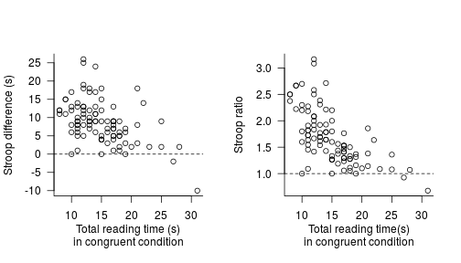
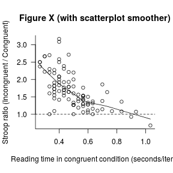

A more selective approach to reporting statistics
Daniël Lakens recently argued that, when reporting statistics in a research paper, ‘the more the merrier’, since reporting several descriptive and inferential statistics facilitates the aggregation of research results. In this post, I argue that there are other factors to be considered that can tip the scale in favour of a more selective approach to reporting statistics.
Before I present my case, I’d like to stress that Daniël and I agree on the key issue: we both advocate making data freely available whenever possible so that researchers can scrutinise, learn from and elaborate on each others’ findings.
That said, his suggestion to report more statistics presents me with an opportunity to argue for the precise opposite. It is not my intention to offer a blanket recommendation about which statistics to report and which not, but rather to highlight two factors that should inform this decision:
More statistics make the text more difficult to read, and communication could suffer as a result.
Selectivity is inherent to data reporting. Ideally, this forces us to think about how our theories and data link up, and how we could most efficiently communicate the patterns in the data in light of our theoretical notions.
I’ll briefly discuss these two factors before turning to Daniël’s specific example.
The intelligibility factor
Research papers tend to contain too many significance tests, many of which are irrelevant to the authors’ research question (e.g. here and here). While such superfluous tests needn’t affect the validity of the study, they can make its results unintelligible, especially to readers without a strong quantitative background who might not see the forest for the trees.
I’m forced to make ample use of hedging here (‘can’, ‘might’) since I don’t know of any studies that have actually investigated how the number of statistical tests affects the communicative value of research papers. That said, I’m similarly concerned that presenting a plethora of descriptive and inferential statistics for a single comparison could likewise deepen the gap between quantitatively minded researchers and the rest: those in the know can either interpret all statistics or know enough to be comfortable with ignoring the rest; others, however, may lack these heuristics, figuring that they’re simply unable to make much sense of several of the numbers reported.
This, of course, is an unverified assumption, but one that warrants some thought. The implication would be that we should think twice about reporting statistics that carry little or no new or relevant information, especially if these statistics aren’t part and parcel of most readers’ repertoires.
Highlighting the take-home message
Results sections should ideally highlight the striking features of the data in light of the research questions. Reporting fewer tests would certainly contribute to this as this makes it easier to separate the wheat from the chaff. Carefully considering how best to present the results and the tests that have been carried out would, too.
To be clear, I am not saying that running several tests or transforming your data in several ways and then picking whichever test happened to confirm your hypothesis is a viable alternative. What I mean is that, before actually running any statistics, you try to think through possible representations of the data, pick the most concise and informative one, and then present it.
A look at Daniël’s example
Admittedly, these two considerations are as yet rather vague. Helpfully, Daniël provided an example of how he would write up the results of a Stroop task conducted in one of his psychology classes and he has challenged me to come up with a better way of reporting this:
The mean reaction times of 95 participants in the Congruent condition (M = 14.88, SD = 4.50) was smaller than the mean of participants in the Incongruent condition (M = 23.69, SD = 5.41, dependent measures correlate r = 0.30). The average difference between conditions is -8.81 seconds (SD = 5.91), 95% CI = [-10.01;-7.61], t(94) = -14.54, p < 0.001, Hedges’ g = -1.76, 95% CI [-2.12;-1.42]. The data are logBF10 = 52.12 times more probable under the alternative hypothesis than under the null hypothesis.
I’ll first try to spell out my thoughts when I first read this example. I’ll then share my thoughts about I might go about reporting these Stroop data.
The main rationale for reporting several of these statistics is that they can then be included in meta-analyses. But the 95% confidence interval, the t-test and its associated p-value, standardised effect size (Hedges’ g) and its 95% confidence interval as well as the Bayes factor (logBF10) are all direct functions of the descriptive statistics that were provided. Surely anyone intending to run a meta-analysis should be able to derive such measures from the statistics provided.
From my patchy knowledge of Bayesian statistics, I would think that the Bayes factor only makes sense when comparing two specific models (the null hypothesis and the alternative hypothesis). How is the alternative hypothesis specified in this case? I assumed that this Bayes factor was computed using the default settings in
BayesFactorpackage for R, but I wouldn’t think that this knowledge is readily available to most readers. Perhaps it would be useful to make the competing Bayesian prior distributions more explicit first. That said, if the prior distributions are made scrutable, I’m not against reporting Bayesian statistics per se, and I like the idea of using them in an intelligible sentence (but should we remember the ‘52.12’ or rather a 1 followed by 52 zeros, i.e. 1 × 10^52?).I’ve written about standardised effect sizes (here: Hedges’ g) before, and I don’t think this is one of the cases where they contribute meaningful information. Since I don’t think Hedges’ g is common currency amongst most of my potential readers (your situation may be different), I’d axe it. I’ll address the question whether not reporting such standardised effect sizes endangers the potential for comparisons between studies below.
Even though Daniël makes the case for reporting more statistics, this example only features a fraction of the statistics that could reasonably have been reported (medians, MADs, number of participants who show a Stroop effect vs those who don’t; Wilcoxon signed rank test, sign test, permutation tests, regressions, perhaps some machine-learning algorithms I haven’t thought of etc.), illustrating that we necessarily have to exercise selectivity when reporting statistics.
If the reading times weren’t measured with centisecond accuracy, keeping only two significant figures may be better.
Is the Stroop effect best thought of as a 9-second average difference between reading times in the congruent and the incongruent condition? (I’d lose the minus sign, too, but now I’m splitting hairs.) To elaborate, do we conceive of the Stroop effect as an additive shift (i.e. take your reading time in the congruent condition, add the Stroop effect and there you have your reading time in the incongruent condition, give or take an error term) or would we rather think of it as a multiplicative effect (i.e. take your reading time in the congruent condition, multiply by the Stroop effect and out comes your reading time in the incongruent condition, give or take an error term).
This may sound like nit-picking, but whether we think of the Stroop effect as an additive or a multiplicative effect should affect how we present the results. I’m not on top of the Stroop literature, but Uttl and Graf (1997) discuss a study that nicely illustrates why the difference is important. A Stroop task was administered to middle-old and old-old participants. The middle-old participants showed a difference of 495 ms per item between the congruent (592 ms/item) and the incongruent condition (1087 ms/item), whereas old-old participants showed an effect of 710 ms per item (854 vs 1564 ms). This could be interpreted as evidence for an Age-by-Condition interaction. But if instead of calculating differences in reading times, we calculate ratios of reading times, we find that both groups show a multiplicative Stroop effect of 1.8: to arrive at the reading time in the incongruent condition, you have to multiply the reading time in the congruent condition by 1.8 (i.e. add 80%) in both cases.
I’m not an expert on the Stroop task, but I think that, in light of such findings, the Stroop effect is best understood as a multiplicative effect. But I might be wrong. Daniël’s data, which he was kind enough to share, don’t really provide compelling evidence for either position.
Note, incidentally, that if we compute Stroop ratios rather than differences, we can directly compare studies without needing to bother with ‘standardised’ effect sizes: the reading time ratios can straigthforwardly be compared between studies.
Another way to standardise the Stroop effect so that it can be compared across studies would be to divide the total reading times by the number of items (seconds needed per item) or their reciprocal, i.e. speeds (number of items read per second).
- Regardless of whether the Stroop effect is best thought of as additive or multiplicative, a detailed reporting based on the average effect can obfuscate some important trends that would seem relevant for meta-analytical purposes. Such patterns may be worth highlighting even if they weren’t of primary importance to the researchers themselves.
Daniël has kindly provided me with his dataset so that I can illustrate what I mean. In the two plots below, I’ve plotted the Stroop effect (left: difference scores, right: ratio scores) against the participants’ reading times in the congruent (baseline) condition. The dashed horizontal lines indicate the expected effect if there weren’t any Stroop effect. Since all but five out of 95 participants show a Stroop effect, we’d already be pretty confident about the existence of the effect, and the inferential statistics are an afterthought at best.

More interestingly, we can discern a negative pattern in these data. This is likely due to regression to the mean (slow participants sped up relative to fast participants). But this negative pattern could give rise to spurious contradictions between studies that only report averages (be it in great detail). For instance, if another study were to sample participants with faster reading times in the congruent condition and find a much more larger average Stroop effect than Daniël did, the two findings aren’t necessarily in contradiction given this negative trend.
There’s no doubt that there’s a Stroop effect in these data (90 out of 95 participants show it), but such systematic variation in the Stroop effect forces us to think about whether it makes sense to report a single average Stroop effect. I’m not in a position to answer this question, but in any case, I think it would make sense to highlight this pattern.
An alternative write-up
Assuming that both conditions contained 30 items and that I’d have to report a global average Stroop effect, my summary of these data might read something like this:
Across the 95 participants, the mean reading time per item in the incongruent condition (M = 0.79 s, SD = 0.18 s) was 1.7 ± 0.5 (mean ± SD) times as large as in the congruent condition (M = 0.50 s, SD = 0.15 s). We note, however, that the effect seems to vary systematically with the baseline reading times such that slow readers in the congruent condition showed smaller or no Stroop effects (see Figure X).

I’ve assumed that the average (multiplicative) effect is what is of interest here, so that is what I have highlighted both in my description and in the graph.
If for some reason, I couldn’t share the dataset, I’d probably also report the intercorrelation between the two dependent measures. I’d probably also add a one-sample t-test on the individual participants’ Stroop ratios (with H0: μ = 1) to anticipate any reviewer comments, though I think the ‘1.7 ± 0.5’ is pretty convincing, especially considering the graph.
If the negative trend is of further importance, though, a regression model (in which Incongruent is modeled as a function of Congruent centred at its central tendency) could be more useful than a comparisons of means. The intercept of such a model would indicate the Stroop effect for participant with an average reading time in the congruent condition, whereas the slope would indicate how the effect varies as a function of the baseline reading times.
These considerations are specific to this example, but I think considering each type of data in its own right makes sense. And obviously, this write-up could no doubt be improved upon.
Wrapping up
I don’t want to give off the impression that my write-ups are exemplary. When re-reading older drafts or published papers, I more often than not wonder whether I could’ve done a better job at presenting my results. But my worry is always that I may have reported too much information – not too little.
I don’t want to overstate the extent to which I beg to disagree with Daniël’s blog post. We both advocate ‘open science’ and we both want to communicate our results as optimally as possible. I just think that this entails reporting fewer rather than more statistics. Perhaps this is because I, as well as most people I work with and write for, haven’t had a formal education in statistics and too often had to skip utterly unintelligible results sections as a result.
In any case – whether or not my arguments apply when writing to audiences with strong quantitative backgrounds – I hope that my write-up at least illustrates that a simple graph can highlight striking patterns that a t-test, even when reported in great detail, just can’t.
Acknowledgements and further reading
Thanks to Daniel Ezra Johnson for his comments on an earlier draft.
Many of the points discussed here were inspired by Robert P. Abelson’s Statistics as principled argument and William S. Cleveland’s Visualizing data.